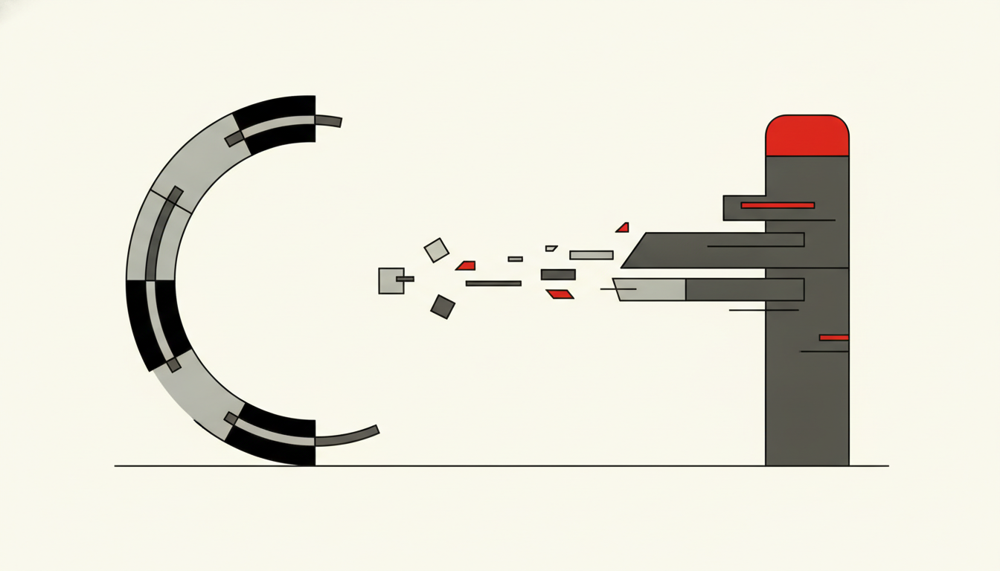

Effective Agents does not ship Microsoft’s dashboards. We use the same dashboard thinking visible in community and Microsoft research patterns (for example ValueLens for Microsoft Copilot and AI-in-One style exports) to decide what boards should see, what operators should act on, and what to ignore.
What “insights” means here
Insights are not vanity charts. They answer four board-grade questions:
- Is anyone actually using it? — activation vs licensed; active days; return rate.
- Is usage becoming skill? — readiness and maturity (asking → finding → producing → delegating).
- Is the work getting cheaper or faster? — hours saved and assisted value, grounded in task baselines — not token burn.
- Are agents healthy? — resolution, abandonment, escalation, response time, feedback themes.
If a slide cannot support a decision (expand, remediate, pause funding), it is decoration.
The value chain we recommend

A practical chain used across mature Copilot programmes:
Interaction → classified AI task → research-sourced time baseline → hours saved → × loaded rate = assisted value.
Then slice by function (Sales, HR, IT, Legal, Finance, Marketing, Service) so sponsors see their work, not a tenant average.
Pair value with consumption (credits, messages, Cowork / Work IQ where available) so finance can hold ROI and cost in the same conversation.
Lenses we brief with leaders
| Lens | What we look for | Decision it unlocks |
|---|---|---|
| Activation | Licensed vs unlicensed; active vs idle | Enablement focus; licence hygiene |
| Readiness | Low-adoption cohorts ranked by upgrade priority | Where coaching pays off |
| Adoption | Coverage %; reach by dept / role | Portfolio balance |
| Consumption | Credits / messages over time | Cost control without killing value |
| Activity | Task and behaviour mix | Whether people are producing or only asking |
| Value | Hours saved; assisted £; projected annual | Business case renewals |
| Maturity | Progression toward delegation | Whether agents are graduating from chat |
| Agent health | Resolution, abandonment, escalation | Kill, fix, or scale an agent |
| Feedback | Thumbs and themes | Preference-loop fuel |
Credit external templates by name when you deploy them (ValueLens, AI-in-One, Viva Insights glossaries). Effective Agents’ job is the narrative and operating cadence, not cloning product docs.
How this ties to Our Goal
- Insights without outcomes = chat theatre with prettier charts.
- Insights with Intent → Governance = you can see whether agents finish steps, escalate cleanly, and improve from preference.
- Prefer metrics boards understand: task completion, time-to-outcome, escalation rate, confidence calibration — then map telemetry into those stories.
Operating tips
- Accumulate 8–12 weeks of usage before drawing hard trend conclusions.
- Refresh monthly for action; weekly only for executive readiness moments.
- Separate licensed Copilot activity from unlicensed chat when telemetry allows — conflating them muddies ROI.
- Treat agent return rate and versatility (how many teams reuse an agent) as leading indicators of product-market fit inside the estate.
Next: Effective Choice · Effective Measurements · Our Goal